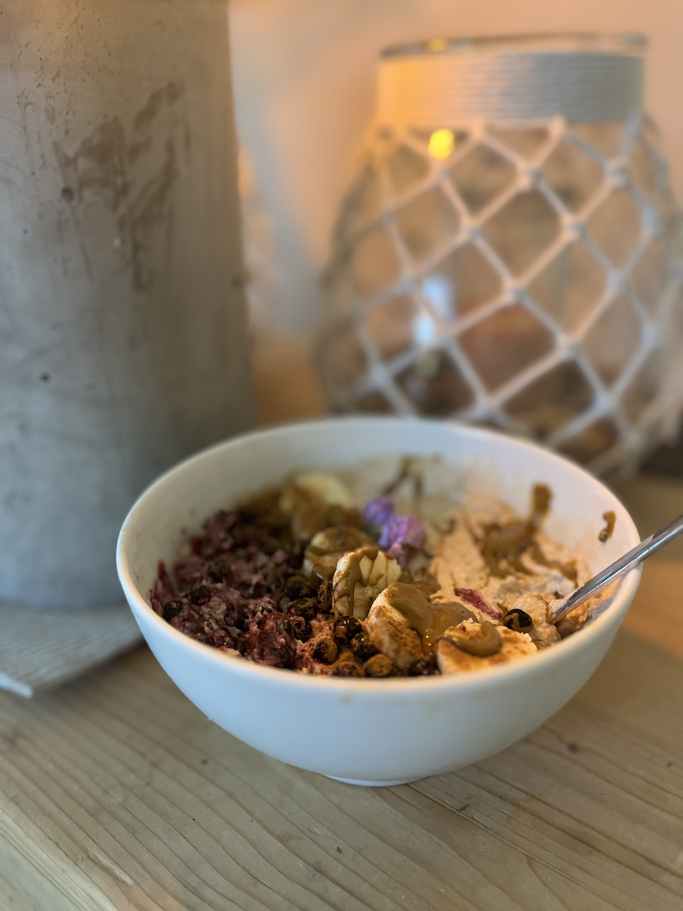
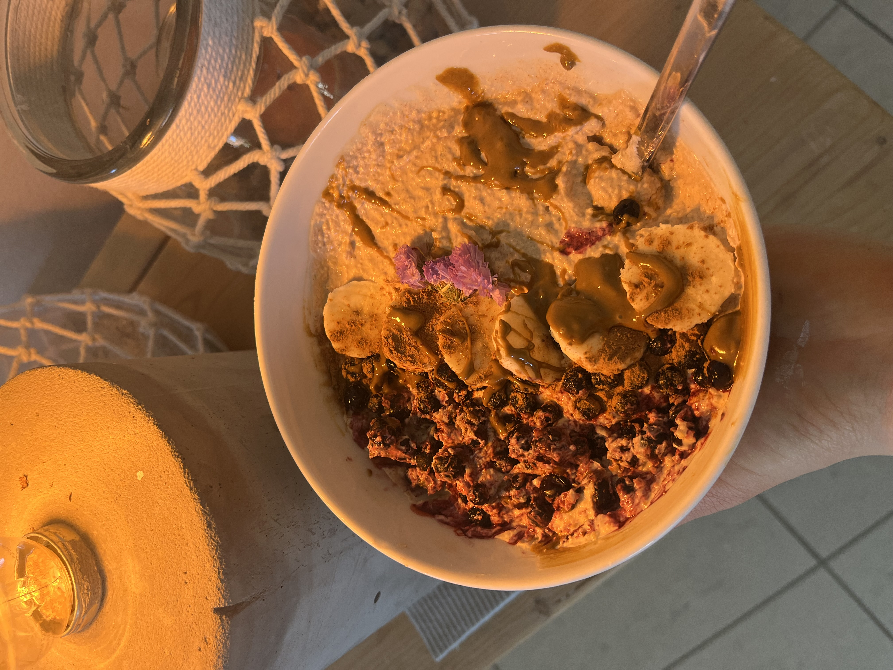

Was TerraLuna kann
Eine App die sich an dich anpasst
Du stellst im Profil ein was dich betrifft. Alles andere wird ausgeblendet.


Dein Profil. Deine Regeln.
Histamin, Darm, Zöliakie, Sellerie-Allergie, Stoffwechsel, Zyklus. Stelle ein was dich betrifft. Die gesamte App passt sich an. Auch für Männer.
23 Allergien, 8 Pollenallergien, Kreuzreaktionen. Alles wird berücksichtigt.


Verträglichkeits-Scanner & Barcode
Fotografiere dein Essen und erfahre in Sekunden ob es verträglich ist. Oder scanne den Barcode im Supermarkt.
Erkennt versteckte Allergene, Sellerie-Synonyme wie Liebstöckel und Maggi, Glutenquellen und Histamin-Trigger. Personalisiert auf dein Profil.


Alles auf einen Blick
Zyklusphase, Kalender, Wetter, Pollenbelastung, Kreuzallergien und dein persönlicher Tipp des Tages. Alles was du brauchst, direkt morgens.
PMS-Hinweise, Erinnerungen an Supplemente und Wasser. Auch bei Amenorrhoe und in den Wechseljahren.


Sicher unterwegs. In 8 Sprachen.
Restaurant-Texte zum Vorzeigen. Schnelle Sätze zum Antippen. Eigene Nachricht übersetzen lassen. Für Histamin, Zöliakie und Sellerie-Allergie.
Dazu ein kompletter Reise-Guide mit Vorbereitung, Unterkunft, sichere Lebensmittel und Notfall-Snacks.


Sicher einkaufen. In 13 Märkten.
REWE, EDEKA, ALDI, Lidl, Kaufland, Penny, Netto, Norma, dm, Rossmann, Müller, Alnatura und Denn's Biomarkt. Geprüfte Produkte nach Markt sortiert.
Einkaufslisten erstellen. Google Maps Integration. Alles glutenfrei und ohne Industriezucker.

120+ Rezepte. Alle sicher.
Glutenfrei und ohne Industriezucker. Von Frühstück bis Abendessen. Filter nach Histamin, Darm, Vegan und mehr. Mit Allergie-Warnung wenn etwas nicht zu deinem Profil passt.



Alle Rezepte: glutenfrei, ohne Industriezucker, mit Liebe gemacht.


250+ Lebensmittel. Dein Histamin-Fass.
Jedes Lebensmittel bewertet nach Histamin, Darm und Zyklusphase. Ampel-System in Grün, Gelb und Rot.
Das Histamin-Fass zeigt dir wie voll dein Fass heute ist. Frische-Timer und Tausch-Vorschläge inklusive.


Verstehen was in deinem Körper passiert.
Interaktive Einführungen zu Histaminintoleranz, Wechseljahren, Amenorrhoe und Stoffwechselstörungen. Lernbibliothek mit Artikeln, die du wirklich verstehst.
Kein Fachchinesisch. Einfach erklärt. Mit Empathie.
Und noch mehr
Stress & Nervensystem
Die Verbindung zwischen Darm, Stress und Hormonen. Vagusnerv-Regulation. Atemübungen.
Wetter & Pollen
Aktuelle Pollenbelastung. Kreuzallergien automatisch erkennen. Wetterbasierte Hinweise.
Tagebuch & Muster
Symptome tracken. Verbindungen erkennen. Dein Körper zeigt dir Muster wenn du hinschaust.
SOS-Karten
Soforthilfe bei akuten Beschwerden. Was tun bei Histaminschub, Bauchkrämpfen, Übelkeit.
Bewegung
Workouts angepasst an deine Zyklusphase. Sanft in der Menstruation, aktiv in der Follikelphase.
Auch für Männer
Einfach im Profil umstellen. Eigene Farben, kein Zyklustracking. Alle anderen Features verfügbar.